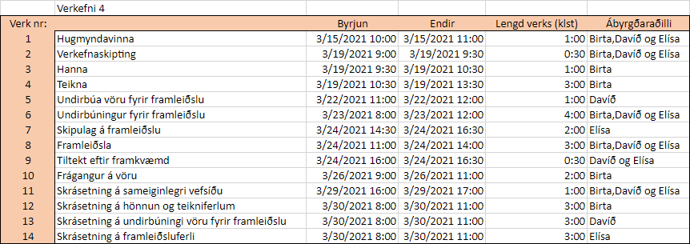
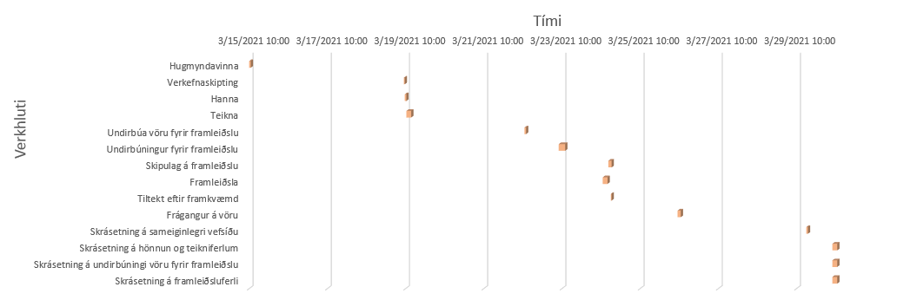
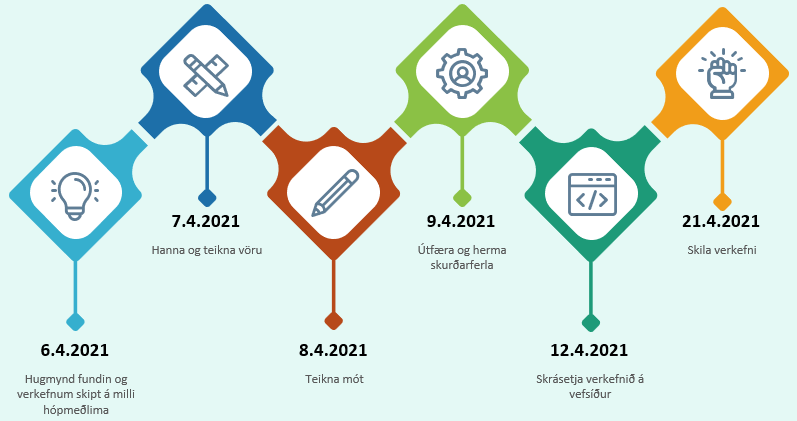
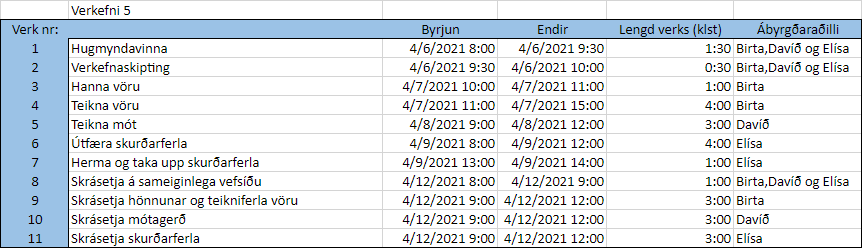
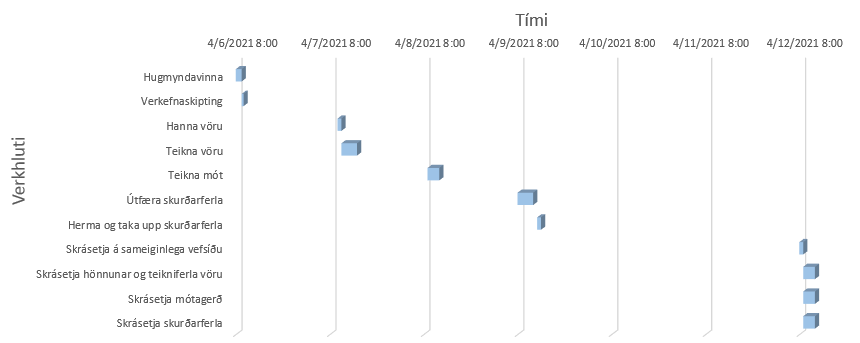
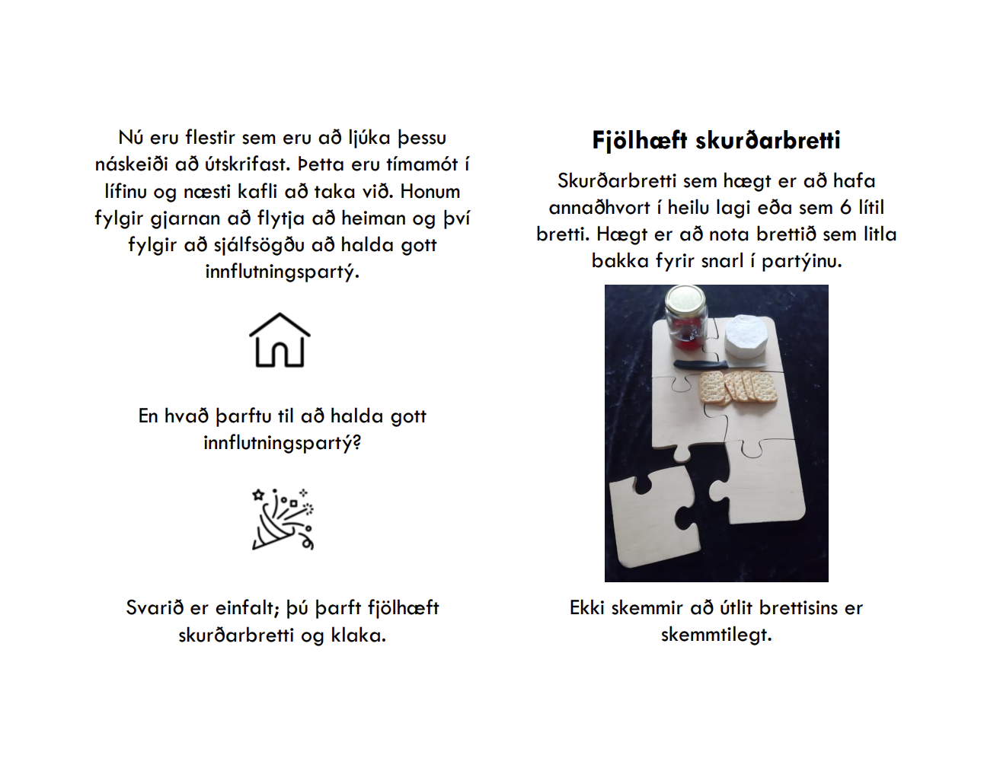

Verkefnið var unnið af Birtu Hákonardóttr, Davíð Rúnari Matthíassyni og Elísu Ósk Jónsdóttur.
Eftir fyrsta fund sá hópurinn strax að við vildum framleiða hlut sem hefði bæði minimalíska hönnun og notagildi. Einnig vildum við hafa eitthvað þema, sem ákveðið var að yrði eldhúsáhöld. Við ákváðum að hanna hluti sem okkur vantaði og töldum nauðsynlega í lítið innflutningspartý.
Nú stöndum við nefnilega á þeim tímamótum að við og margir vinir okkar erum að útskrifast. Þá fara margir að flytja í sitthvora áttina, hvort sem það er í meistaranám erlendis eða byrja að búa hér innanlands. Okkur fannst þetta því einstaklega viðeigandi hugmynd.
Við ákváðum að hanna viðarbretti sem er í laginu eins og púsluspil og klakaform sem býr til klaka sem eru í laginu eins og snjókorn. Þá er hægt að bjóða upp á hressingar á brettinu og búa til fallega klaka til að setja í drykkina.
Fyrsta skref í svona verkefni er að skipuleggja framkvæmd þess og skipta niður verkefnum. Fyrir hvort verkefni voru settar fram helstu vörður og tímaáætlun búin til.
Helstu vörður fyrir skurðarbrettið, sem gert var í verkefni 4, eru:
Gerð var tímaáætlun fyrir verkefnið og ábyrgðaraðili fyrir hvern verkþátt valinn. Markmiðið var að klára verkefnið fyrir páska. Til að byrja með var þetta gert í MS Project, sem finna má á skólatölvunum í VR2. Okkur fannst þó framsetningin ekki koma nógu vel út í MS Project og settum áætlunina því upp í Excel seinna meir. Tímaáætlunin varð eftirfarandi:
 Skipulag á verkefni 5 var örlítið öðruvísi. Mótið fyrir klakaformið var því miður ekki framleitt vegna samkomutakmarkana. Í stað þess að framleiða mótið voru búnir til skurðarferlar og hermun notuð til að búa til myndband sem sýndi skurðaferlana vel. Helstu vörður fyrir verkefni 5 voru:
Eins og fyrir verkefni 4 voru verkþættir settir inn í Excel og ábyrgðaraðilli valinn. Þá varð til eftirfarandi tímaáætlun:
 Hópnum gekk mjög vel að fylgja þessari áætlun og hluti af verkefninu var framkvæmdur á undan tímaáætlun. Það leiddi til þess að hægt var að byrja fyrr á næsta verkþætti. Þegar verkinu var lokið var hópurinn mjög ánægður verkáætlunina og hvernig hægt var að spara tíma með henni og klára framleiðsluna á skurðarbrettinu snemma.
Á vefsíðu Hugverkastofunnar segir að með hugtakinu hönnun er átt við útlit vöru eða hluta vöru sem ræðst af einstökum þáttum eða skreytingu hennar. Útlit vörunnar ræðst fyrst og fremst af formi hennar þó aðrir þættir geti einnig haft áhrif, svo sem litur og efni. Hönnun afmarkast af því útliti vöru. Þó svo að vara hafi tæknilega virkni er það aðeins útlit hennar sem fæst verndað með hönnunarvernd. Til þess að hönnun njóti verndar þarf hún að uppfylla það skilyrði að vera ný og sérstæð.
Vörurnar okkar tvær eru aftur á móti báðar hannaðar út frá hlutum sem eru nú þegar til og birtir. Þess vegna væri ekki möguleiki fyrir okkur að sækja um hönnunarvernd fyrir vörurnar okkar.
Búinn var til léttur einblöðungur fyrir verkefnið. Skjáskot af honum má sjá hér að neðan. Það getur verið erfitt að sjá fyrir sér hvernig bæklingurinn kemur út, en í rauninni er innri hliðin á fyrri myndinni (bls. 1 og 2) og síðan er forsíðan og baksíðan á seinni myndinni (bls. 0 og 3). Hægt er að hlaða bæklingnum niður og prenta hann út til að sjá útkomuna betur.
Í töflunni hér að neðan má sjá þann tíma sem fór í verkefnið eftir hópmeðlimum og verkþáttum.
| Verkþáttur | Birta | Davíð | Elísa | Samtals |
|---|---|---|---|---|
| Hugmyndavinna | 1 klst | 1 klst | 1 klst | 3 klst |
| Verkefnaskipting | 0,5 klst | 0,5 klst | 0,5 klst | 1,5 klst |
| Gerð tímaáætlunar | 2 klst | 2 klst | 2 klst | 6 klst |
| Gerð glærukynningar | 1 klst | 1 klst | ||
| Gerð einblöðungs | 1 klst | 1 klst | ||
| Gerð kynningarmyndbands | 2 klst | 2 klst | 2 klst | 6 klst |
| Ákvörðun hönnunarverndar | 0,5 klst | 1 klst | 1,5 klst | |
| Skrásetning á vefsíðu | 2 klst | 2 klst | 3 klst | 7 klst |
| Samtals | 9 klst | 8,5 klst | 9,5 klst | 27 klst |